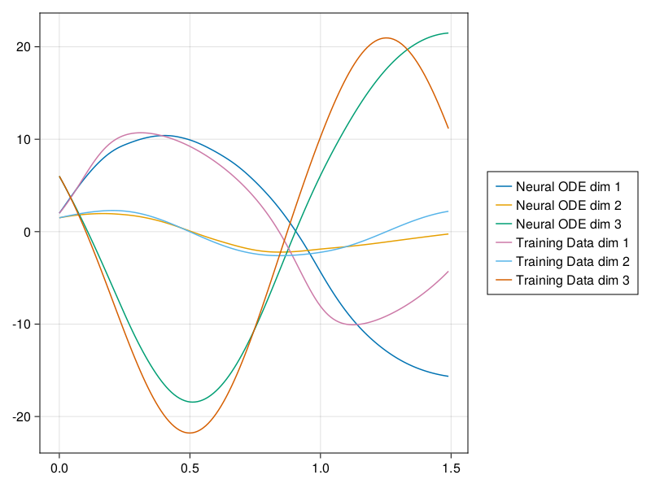
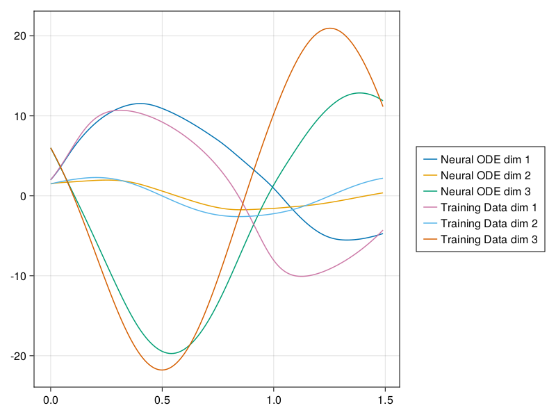

Machine Learning Model
We now come to the question of approximating this system based on trajectory data. The method of Chen et. al. suggests considering a recurrent neural network as a "sequence of transformations to a hidden state $\mathbf{h}_t$" [1]:
\[\mathbf{h}_{t+1} = \mathbf{h}_t + f(\mathbf{h}_t,\, \theta)\]
where $t = 0, \ldots, T,\,\ \mathbf{h}_t \in \mathbb{R}^d$, and $f$ is a single layer of a neural network. They then extend this to an ODE propagating the state of a hidden layer
\[\frac{d \mathbf{h} (t)}{d t} = f(\mathbf{h}(t),\, t,\, \theta)\]
where $t \in [0, T]$, and $f$ is now an entire neural network.
When considering a chaotic dynamical system, the "chaotic element" arises due to a nonlinearity in the system. This fact is particularly present in Chua's circuit, where the model is almost entirely linear, save for one nonlinearity in the first component. Hence it is reasonable to desire that the neural network should contain a "linear" component, as well as a nonlinear one. Certainly there are many ways to achieve such a network; two possibilities are presented below.
The first idea which comes to mind is to separate linear and nonlinear components explicitly in the network. More precisely, the neural network should model a function $nn(x) = W \cdot x + g(x)$ where $W \in \mathbb{R}^{d \times d}$ and $g$ can be considered as an explicit nonlinearity. This can be implemented using Flux.jl's built in layers.
using FluxN_weights = 15
W = Dense(3 => 3) # dimension = 3
g = Chain(
Dense(3 => N_weights),
Dense(N_weights => N_weights, swish),
Dense(N_weights => 3)
)
nn = Parallel(+, W, g)Parallel(
+,
Dense(3 => 3), # 12 parameters
Chain(
Dense(3 => 15), # 60 parameters
Dense(15 => 15, swish), # 240 parameters
Dense(15 => 3), # 48 parameters
),
) # Total: 8 arrays, 360 parameters, 2.000 KiB.Another option would be to build in the linearity implicitly. One could use a more "typical" neural network with linear input and/or output layers, and use residual network layers to compute a nonlinearity. This allows the network model to "decide" for itself whether the linear component is strictly necessary. A concrete implementation would look like:
nn = Chain(
Dense(3 => N_weights),
SkipConnection(Dense(N_weights => N_weights, swish), +),
SkipConnection(Dense(N_weights => N_weights, swish), +),
SkipConnection(Dense(N_weights => N_weights, swish), +),
Dense(N_weights => 3)
)Chain(
Dense(3 => 15), # 60 parameters
SkipConnection(
Dense(15 => 15, swish), # 240 parameters
+,
),
SkipConnection(
Dense(15 => 15, swish), # 240 parameters
+,
),
SkipConnection(
Dense(15 => 15, swish), # 240 parameters
+,
),
Dense(15 => 3), # 48 parameters
) # Total: 10 arrays, 828 parameters, 3.906 KiB.This model presents itself as a more "typical" residual neural network as described in literature. However, one observes by considering the network graph that this model also permits a linear and nonlinear component. Further, this structure benefits from the design of a residual neural network: the "vanishing gradient" problem is reduced [6], and extra layers can be added with reduced fear of overfitting since the model can simply "choose" to ignore unnecessary layers.
During development of the project, both methods were tested and the implicit form performed better. However, the difference was not large. For the remainder of this report, the implicit method will be used.
using CairoMakie# for plotting training results
function plot_nde(sol, model, train; ndata=300)
t = sol.t[1:ndata]
pred = Array(model((t,train[1][2])))
tr = Array(sol)
fig, ax, ms = lines(t, pred[1, 1:ndata], label="Neural ODE dim 1")
lines!(ax, t, pred[2, 1:ndata], label="Neural ODE dim 2")
lines!(ax, t, pred[3, 1:ndata], label="Neural ODE dim 3")
lines!(ax, t, tr[1, 1:ndata], label="Training Data dim 1")
lines!(ax, t, tr[2, 1:ndata], label="Training Data dim 2")
lines!(ax, t, tr[3, 1:ndata], label="Training Data dim 3")
Legend(fig[1,2], ax)
fig, ax
endplot_nde (generic function with 1 method)using StaticArrays, Statistics
using OrdinaryDiffEq, SciMLSensitivity#, CUDA
using NODEData, ChaoticNDETools# Chua's circuit
function v(u, p, t)
x, y, z = u
a, b, m0, m1 = p
SA{Float32}[ a*(y-m0*x-m1/3.0*x^3), x-y+z, -b*y ]
end
# parameters
p_ode = SA{Float32}[ 18.0, 33.0, -0.2, 0.01 ]
a, b, m0, m1 = p_ode
v(u) = v(u, p_ode, 0f0)
# equilibrium
x₊ = SA{Float32}[ sqrt(-3*m0/m1), 0, -sqrt(-3*m0/m1) ]
x₋ = -x₊
# integration time
t0, t1 = 0f0, 50f0
tspan = (t0, t1)
dt = 1f-2;0.01f0The data used will be the trajectories from the previous section. These are split into minibatches to both reduce the chance of the training model diverging, as well as to reduce condition number of the gadients for optimization.
x0 = SA{Float32}[2, 1.5, 6]
prob = ODEProblem(v, x0, (t0, t1), p_ode)
sol = solve(prob, RK4(), saveat=dt, sensealg=InterpolatingAdjoint())retcode: Success
Interpolation: 1st order linear
t: 5001-element Vector{Float32}:
0.0
0.01
0.02
0.03
0.04
0.05
0.06
0.07
0.08
0.09
⋮
49.92
49.93
49.94
49.95
49.96
49.97
49.98
49.99
50.0
u: 5001-element Vector{SVector{3, Float32}}:
[2.0, 1.5, 6.0]
[2.3478057, 1.5638899, 5.4943976]
[2.7161942, 1.625573, 4.9680758]
[3.1040666, 1.6850694, 4.4217606]
[3.5098338, 1.7423917, 3.85617]
[3.931378, 1.7975401, 3.2720225]
[4.3661227, 1.8505011, 2.6700351]
[4.8108993, 1.9012377, 2.0509377]
[5.2620163, 1.9496877, 1.4154711]
[5.715368, 1.9957609, 0.7644038]
⋮
[6.8810635, -0.7925286, -10.219693]
[6.790601, -0.8169887, -9.954002]
[6.700213, -0.839425, -9.68071]
[6.609989, -0.8597987, -9.400273]
[6.5201564, -0.8780382, -9.113567]
[6.4308176, -0.89410245, -8.821073]
[6.342229, -0.90794945, -8.523723]
[6.2545276, -0.919562, -8.222058]
[6.1679735, -0.9289042, -7.9170527]train, valid = NODEDataloader(sol, 8; dt=dt, valid_set=0.8, GPU=false#=true=#)
trainNODEData{Matrix{Float32},Int64} with 993 batches with length 8The parameters of the model are extracted and flattened to a vector $p$ so that the gradient of the loss w.r.t. $p$ can be directly calculated.
p, re_nn = Flux.destructure(nn)
#p = p |> gpu
neural_ode(u, p, t) = re_nn(p)(u)
neural_ode(u) = neural_ode(u, p, 0f0)
neural_ode_prob = ODEProblem(neural_ode, #=CuArray(x0)=#x0, tspan, p)
model = ChaoticNDE(neural_ode_prob, alg=RK4(), gpu=false#=true=#, sensealg=InterpolatingAdjoint());ChaoticNDE{Vector{Float32}, ODEProblem{SVector{3, Float32}, Tuple{Float32, Float32}, false, Vector{Float32}, ODEFunction{false, SciMLBase.AutoSpecialize, typeof(Main.neural_ode), LinearAlgebra.UniformScaling{Bool}, Nothing, Nothing, Nothing, Nothing, Nothing, Nothing, Nothing, Nothing, Nothing, Nothing, Nothing, Nothing, Nothing, typeof(SciMLBase.DEFAULT_OBSERVED), Nothing, Nothing}, Base.Pairs{Symbol, Union{}, Tuple{}, NamedTuple{(), Tuple{}}}, SciMLBase.StandardODEProblem}, RK4{typeof(OrdinaryDiffEq.trivial_limiter!), typeof(OrdinaryDiffEq.trivial_limiter!), Static.False}, Base.Pairs{Symbol, InterpolatingAdjoint{0, true, Val{:central}, Nothing}, Tuple{Symbol}, NamedTuple{(:sensealg,), Tuple{InterpolatingAdjoint{0, true, Val{:central}, Nothing}}}}, ChaoticNDETools.CPUDevice}(Float32[0.0022636023, 0.38807735, -0.18090312, -0.4603738, -0.2653353, -0.4615465, -0.1733902, -0.5228375, 0.20091228, 0.15803115 … 0.34526706, 0.57241267, 0.11016198, -0.4939539, -0.44944444, 0.0024166014, -0.28135258, 0.0, 0.0, 0.0], ODEProblem{SVector{3, Float32}, Tuple{Float32, Float32}, false, Vector{Float32}, ODEFunction{false, SciMLBase.AutoSpecialize, typeof(Main.neural_ode), LinearAlgebra.UniformScaling{Bool}, Nothing, Nothing, Nothing, Nothing, Nothing, Nothing, Nothing, Nothing, Nothing, Nothing, Nothing, Nothing, Nothing, typeof(SciMLBase.DEFAULT_OBSERVED), Nothing, Nothing}, Base.Pairs{Symbol, Union{}, Tuple{}, NamedTuple{(), Tuple{}}}, SciMLBase.StandardODEProblem}(ODEFunction{false, SciMLBase.AutoSpecialize, typeof(Main.neural_ode), LinearAlgebra.UniformScaling{Bool}, Nothing, Nothing, Nothing, Nothing, Nothing, Nothing, Nothing, Nothing, Nothing, Nothing, Nothing, Nothing, Nothing, typeof(SciMLBase.DEFAULT_OBSERVED), Nothing, Nothing}(Main.neural_ode, LinearAlgebra.UniformScaling{Bool}(true), nothing, nothing, nothing, nothing, nothing, nothing, nothing, nothing, nothing, nothing, nothing, nothing, nothing, SciMLBase.DEFAULT_OBSERVED, nothing, nothing), Float32[2.0, 1.5, 6.0], (0.0f0, 50.0f0), Float32[0.0022636023, 0.38807735, -0.18090312, -0.4603738, -0.2653353, -0.4615465, -0.1733902, -0.5228375, 0.20091228, 0.15803115 … 0.34526706, 0.57241267, 0.11016198, -0.4939539, -0.44944444, 0.0024166014, -0.28135258, 0.0, 0.0, 0.0], Base.Pairs{Symbol, Union{}, Tuple{}, NamedTuple{(), Tuple{}}}(), SciMLBase.StandardODEProblem()), RK4(stage_limiter! = trivial_limiter!, step_limiter! = trivial_limiter!, thread = static(false)), Base.Pairs{Symbol, InterpolatingAdjoint{0, true, Val{:central}, Nothing}, Tuple{Symbol}, NamedTuple{(:sensealg,), Tuple{InterpolatingAdjoint{0, true, Val{:central}, Nothing}}}}(:sensealg => InterpolatingAdjoint{0, true, Val{:central}, Nothing}(nothing, false, false)), ChaoticNDETools.CPUDevice())model(valid[1])3×8 Matrix{Float32}:
-5.66399 -5.59289 -5.5232 … -5.32227 -5.25796 -5.19492
0.513392 0.497728 0.482008 0.434574 0.418695 0.402789
3.28215 3.26132 3.24069 3.17995 3.16011 3.14047The final consideration required before training can be done is the loss function. The most naive loss function may be derived from the shooting method for boundary value problems. One integrates the model for some fixed time $T$, and compute the difference (in norm) of the model trajectory to the true trajectory data. This technique is extended analogoously to the method of multiple shooting, where the multiple small consecutive trajectories are compared. The resulting differences can be added together to obtain a scalar valued loss function, equivalent (up to a scaling factor) to a mean squared error.
\[L(\mathbf{x}, \mathbf{\hat{x}}; \mathbf{p}) = \sum_{i=1}^n \| \mathbf{x}(t_i) - \mathbf{\hat{x}}(t_i; \mathbf{p}) \| ^2\]
where $\mathbf{x},\ \mathbf{\hat{x}}$ are true and predicted time series, evaluated at times $t_1 < t_2 < \ldots < t_n = t_1 + T$. The paramteter vector $p$ is the parameters of the neural network. While the mean squared error works quite well, a potential downfall can occur, particularly in periodic systems. In each small trajectory, the errors of the model will compound. However, the mean squared error weighs all of the errors equally. This leads to the potential case that the model is initially incorrect, but later along the trajectory it corrects itself. The model hence learns a fundamentally wrong trajectory, and cannot easily be trained out of this error. This can be seen in the following training attempt:
loss(x, y) = sum(abs2, x - y)
l = mean(valid) do v
loss( model(v), v[2] )
end
θ = 1f-4
η = 1f-3
opt = Flux.OptimiserChain(Flux.WeightDecay(θ), Flux.RMSProp(η))
opt_state = Flux.setup(opt, model)
N_epochs = 30
for i_e = 1:N_epochs
Flux.train!(model, train, opt_state) do m, t, x
result = m((t,x))
loss(result, x)
end
global l = mean(valid) do v
loss( model(v), v[2] )
end
if i_e % 30 == 0
global η /= 2
Flux.adjust!(opt_state, η)
end
end
l1.3228059f0model(valid[1])3×8 Matrix{Float32}:
-5.66399 -5.6447 -5.62558 … -5.56937 -5.55134 -5.53388
0.513392 0.494036 0.474515 0.41541 0.395657 0.375935
3.28215 3.13256 2.99175 2.62419 2.52037 2.42593valid[1][2]3×8 Matrix{Float32}:
-5.66399 -5.66903 -5.67939 … -5.7435 -5.77603 -5.81421
0.513392 0.483743 0.452718 0.352042 0.316191 0.279308
3.28215 3.11754 2.963 2.56396 2.45369 2.35536fig1, ax1 = plot_nde(sol, model, train, ndata=150)┌ Warning: Layer with Float32 parameters got Float64 input.
│ The input will be converted, but any earlier layers may be very slow.
│ layer = Dense(3 => 15) # 60 parameters
│ summary(x) = "3-element Vector{Float64}"
└ @ Flux ~/.julia/packages/Flux/Nzh8J/src/layers/stateless.jl:50
This error, and the following solution, was discovered in the development of this project. For a dynamical system, we expect the error to compound exponentially. Hence it would seem beneficial to ensure that the model stays as close to the true solution at the beginning of the trajectory as possible. To encourage this, we add an exponential weight factor:
\[L(\mathbf{x}, \mathbf{\hat{x}}; \mathbf{p}) = \sum_{i=1}^n \beta^i \cdot \| \mathbf{x}(t_i) - \mathbf{\hat{x}}(t_i; \mathbf{p}) \| ^2\]
where $\beta \in (0,1)$. While optimizing parameters, $\beta$ can be optimized as well. During testing, an optimal value of $\beta = 0.99$ was observed.
nn = Chain(
Dense(3 => N_weights),
SkipConnection(Dense(N_weights => N_weights, swish), +),
SkipConnection(Dense(N_weights => N_weights, swish), +),
SkipConnection(Dense(N_weights => N_weights, swish), +),
Dense(N_weights => 3)
)
p, re_nn = Flux.destructure(nn)
#p = p |> gpu
neural_ode(u, p, t) = re_nn(p)(u)
neural_ode(u) = neural_ode(u, p, 0f0)
neural_ode_prob = ODEProblem(neural_ode, #=CuArray(x0)=#x0, tspan, p)
model = ChaoticNDE(neural_ode_prob, alg=RK4(), gpu=false#=true=#, sensealg=InterpolatingAdjoint())ChaoticNDE{Vector{Float32}, ODEProblem{SVector{3, Float32}, Tuple{Float32, Float32}, false, Vector{Float32}, ODEFunction{false, SciMLBase.AutoSpecialize, typeof(Main.neural_ode), LinearAlgebra.UniformScaling{Bool}, Nothing, Nothing, Nothing, Nothing, Nothing, Nothing, Nothing, Nothing, Nothing, Nothing, Nothing, Nothing, Nothing, typeof(SciMLBase.DEFAULT_OBSERVED), Nothing, Nothing}, Base.Pairs{Symbol, Union{}, Tuple{}, NamedTuple{(), Tuple{}}}, SciMLBase.StandardODEProblem}, RK4{typeof(OrdinaryDiffEq.trivial_limiter!), typeof(OrdinaryDiffEq.trivial_limiter!), Static.False}, Base.Pairs{Symbol, InterpolatingAdjoint{0, true, Val{:central}, Nothing}, Tuple{Symbol}, NamedTuple{(:sensealg,), Tuple{InterpolatingAdjoint{0, true, Val{:central}, Nothing}}}}, ChaoticNDETools.CPUDevice}(Float32[-0.21237868, 0.21272404, -0.106074505, 0.1157215, 0.36485666, -0.43169662, 0.2063435, 0.24524699, -0.50926447, -0.18571588 … -0.34094217, -0.3311415, -0.20450649, 0.4134706, -0.4526637, 0.317485, 0.23387282, 0.0, 0.0, 0.0], ODEProblem{SVector{3, Float32}, Tuple{Float32, Float32}, false, Vector{Float32}, ODEFunction{false, SciMLBase.AutoSpecialize, typeof(Main.neural_ode), LinearAlgebra.UniformScaling{Bool}, Nothing, Nothing, Nothing, Nothing, Nothing, Nothing, Nothing, Nothing, Nothing, Nothing, Nothing, Nothing, Nothing, typeof(SciMLBase.DEFAULT_OBSERVED), Nothing, Nothing}, Base.Pairs{Symbol, Union{}, Tuple{}, NamedTuple{(), Tuple{}}}, SciMLBase.StandardODEProblem}(ODEFunction{false, SciMLBase.AutoSpecialize, typeof(Main.neural_ode), LinearAlgebra.UniformScaling{Bool}, Nothing, Nothing, Nothing, Nothing, Nothing, Nothing, Nothing, Nothing, Nothing, Nothing, Nothing, Nothing, Nothing, typeof(SciMLBase.DEFAULT_OBSERVED), Nothing, Nothing}(Main.neural_ode, LinearAlgebra.UniformScaling{Bool}(true), nothing, nothing, nothing, nothing, nothing, nothing, nothing, nothing, nothing, nothing, nothing, nothing, nothing, SciMLBase.DEFAULT_OBSERVED, nothing, nothing), Float32[2.0, 1.5, 6.0], (0.0f0, 50.0f0), Float32[-0.21237868, 0.21272404, -0.106074505, 0.1157215, 0.36485666, -0.43169662, 0.2063435, 0.24524699, -0.50926447, -0.18571588 … -0.34094217, -0.3311415, -0.20450649, 0.4134706, -0.4526637, 0.317485, 0.23387282, 0.0, 0.0, 0.0], Base.Pairs{Symbol, Union{}, Tuple{}, NamedTuple{(), Tuple{}}}(), SciMLBase.StandardODEProblem()), RK4(stage_limiter! = trivial_limiter!, step_limiter! = trivial_limiter!, thread = static(false)), Base.Pairs{Symbol, InterpolatingAdjoint{0, true, Val{:central}, Nothing}, Tuple{Symbol}, NamedTuple{(:sensealg,), Tuple{InterpolatingAdjoint{0, true, Val{:central}, Nothing}}}}(:sensealg => InterpolatingAdjoint{0, true, Val{:central}, Nothing}(nothing, false, false)), ChaoticNDETools.CPUDevice())β = 0.99f0
function loss(x, y, β)
n = size(x, 2)
βs = β .^ (1:n)
sum( abs2, (x - y) .* βs' )
end
l = mean(valid) do v
loss( model(v), v[2], 1f0 )
end
θ = 1f-4
η = 1f-3
opt = Flux.OptimiserChain(Flux.WeightDecay(θ), Flux.RMSProp(η))
opt_state = Flux.setup(opt, model)
N_epochs = 30
for i_e = 1:N_epochs
Flux.train!(model, train, opt_state) do m, t, x
result = m((t,x))
loss(result, x, β)
end
global l = mean(valid) do v
loss( model(v), v[2], 1f0 )
end
if i_e % 30 == 0
global η /= 2
Flux.adjust!(opt_state, η)
end
end
l0.8882831f0model(valid[1])3×8 Matrix{Float32}:
-5.66399 -5.6616 -5.66358 … -5.69751 -5.71853 -5.74447
0.513392 0.491568 0.468924 0.395809 0.369663 0.342606
3.28215 3.11912 2.9641 2.54971 2.42954 2.31891valid[1][2]3×8 Matrix{Float32}:
-5.66399 -5.66903 -5.67939 … -5.7435 -5.77603 -5.81421
0.513392 0.483743 0.452718 0.352042 0.316191 0.279308
3.28215 3.11754 2.963 2.56396 2.45369 2.35536fig2, ax2 = plot_nde(sol, model, train, ndata=150)┌ Warning: Layer with Float32 parameters got Float64 input.
│ The input will be converted, but any earlier layers may be very slow.
│ layer = Dense(3 => 15) # 60 parameters
│ summary(x) = "3-element Vector{Float64}"
└ @ Flux ~/.julia/packages/Flux/Nzh8J/src/layers/stateless.jl:50